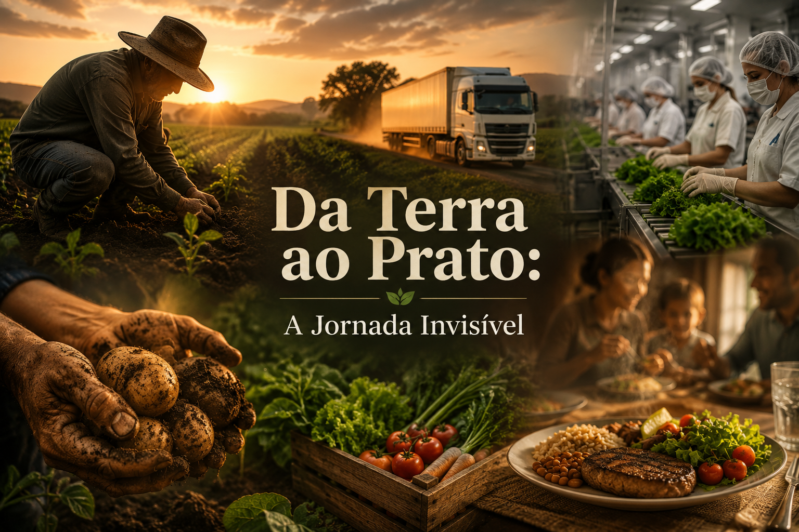
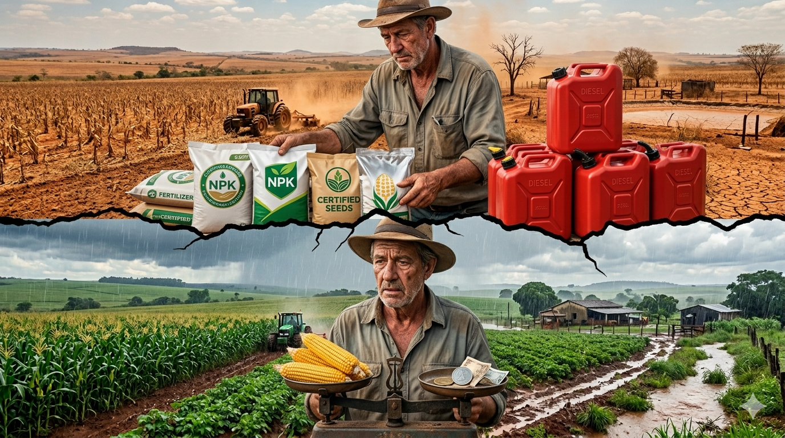
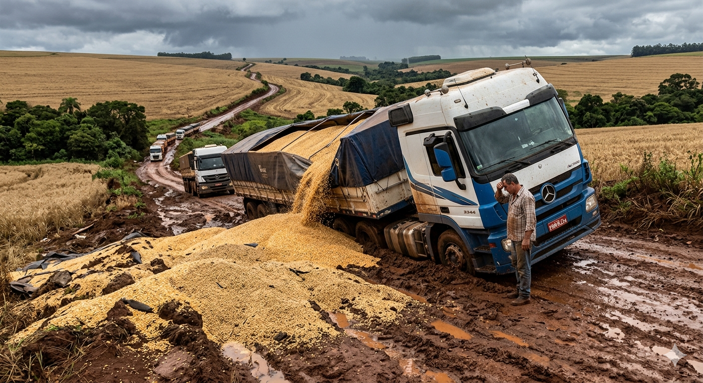
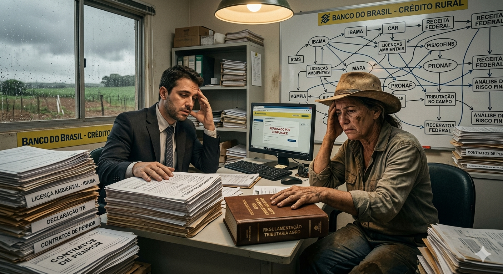

O intuíto desta página é mostrar que, por trás dos alimentos que chegam à mesa das pessoas, existe uma complexa e difícil jornada, que a maioria da população urbana desconhece.
As incertezas das secas prolongadas, geadas e enchentes causadas pelas mudanças climáticas.
Saiba mais, clicando no botão abaixo:
A alta dos preços de fertilizantes, sementes e diesel, contrastando com o preço instável de venda.

Saiba mais, clicando no botão abaixo:
O pesadelo do escoamento da safra por estradas precárias que geram perdas de carga.

Saiba mais, clicando no botão abaixo::
A dificuldade de conseguir financiamento agrícola e lidar com as complexas leis ambientais e tributárias

Saiba mais, clicando no botão abaixo: